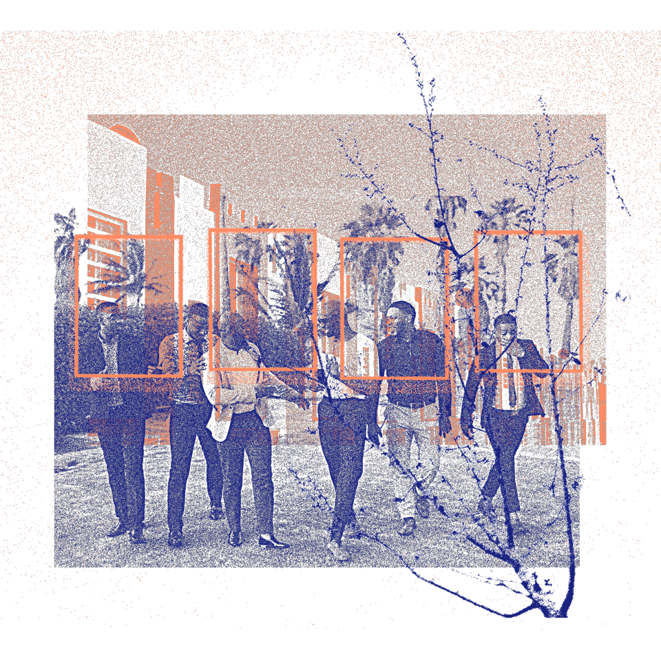

Como podemos utilizar o design para aproximar as pessoas, em tempos de polarizações e segregações?
A facilidade em conexão promovida pela internet, traz uma mudança de pensamento em relação ao compartilhamento entre os usuários. Num primeiro momento, o compartilhamento de dados e informações pela rede, mas também, através da descentralização dos meios de produção e serviços, entre outros meios palpáveis, hoje empresas como o Uber, o AirBnB, entre outros serviços digitais organizam maneiras de conectar pessoas com interesses em comum, que podem se beneficiar do compartilhamento -seja ele um espaço, transporte, etc.
Além de facilitarem a aproximação de pessoas esses serviços atuam como certificadores de segurança entre os usuários, permitindo que essas trocas aconteçam de maneira imparcial e transparente, porém com um fator em comum de confiança entre as partes.
Como podemos utilizar a tecnologia- e design - para criar o sentimento de confiança?
AirBnb é um serviço de aluguel de espaços da sua residência por curtos períodos de tempo. Há pouco tempo atrás poderia soar como um projeto infundamentado e destinado ao fracasso, pois as pessoas não queriam dividir as suas casas com completos estranhos. Hoje, porém a empresa oferece a maior quantidade de quartos para aluguel do mundo, sem ser dona de nenhum deles.
"Design can overcome our most deeply rooted stranger danger bias." - Joe Gebbia
O criador do serviço AirBnb compartilha no seu TED Talk os passos que levaram o seu serviço a conquistar os clientes e os anfitriões a compartilharem suas casas com desconhecidos.
Primeiramente o que o AirBnb descobriu, é que sim, coisas ruins podem acontecer durante a experiência de troca. Mas na maioria das vezes elas não acontecem. Existem notícias e relatos de experiências frustradas e casas com danos sérios após um aluguel mal-sucedido através da plataforma, mas contabilizando o número de operações que são realizadas, esses casos se tornam pontos fora da curva.
Para conquistar as duas partes a realizarem uma operação pela plataforma (seja ela se hospedar ou receber um hóspede) o diferencial oferecido pela plataforma é agir como um mediador entre as diferentes partes. Assim, os Designers de Experiência da empresa estudaram, como é o comportamento social para geração de confiança. Compreenderam também, que as pessoas têm a tendência a se agruparem com outras de interesses semelhantes. Porém algo mais valioso que interesses em comum, são as contagens de avaliações positivas de terceiros como validação de confiabilidade.
O real produto por trás de empresas como o AirBnb e Uber, é a geração de confiança e um seguro contra os possíveis danos de um compartilhamento bem sucedido. Socialmente porém, é a criação de uma cultura do comum, popularização do público-privado e fomentação da ideia de quebra do ideal de possuir em prol do ideal de experienciar.